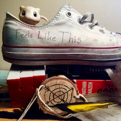

I'm a student from greater Boston. I write music, fiction, and essays, as well as code for web sites and applications.
Listen to Feels Like This on YouTube, Bandcamp, or Spotify. Hear the latest demos and b-sides on SoundCloud. For updates check our Facebook page.
The Same Heart Beats..., which shows how both modern and dated literature struggle to answer the same questions about the human condition.
Not Special Anymore, which uses Nietzsche and Kierkegaard to understand Thomas Hardy's response to Darwin's Origin of Species (1859).
Earth to America, which explains why the First World War was an opportunity America couldn't turn down.
An Empty Cup, a very very brief attempt at explaining why I quit the music business.

michael@michaelroffo.net
Credit where it is due: site design inspired by sivers.org.